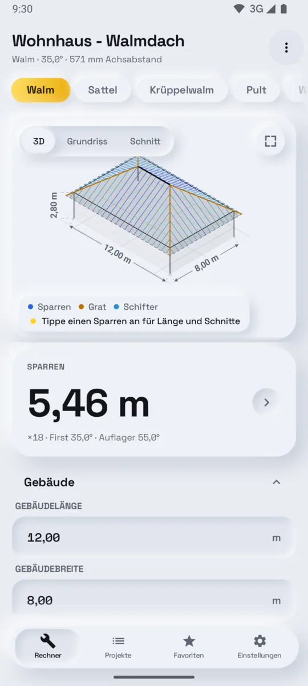
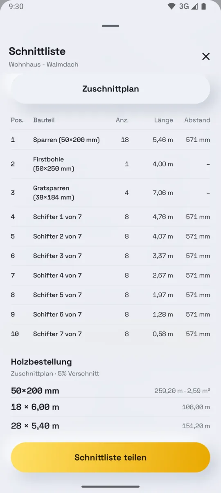
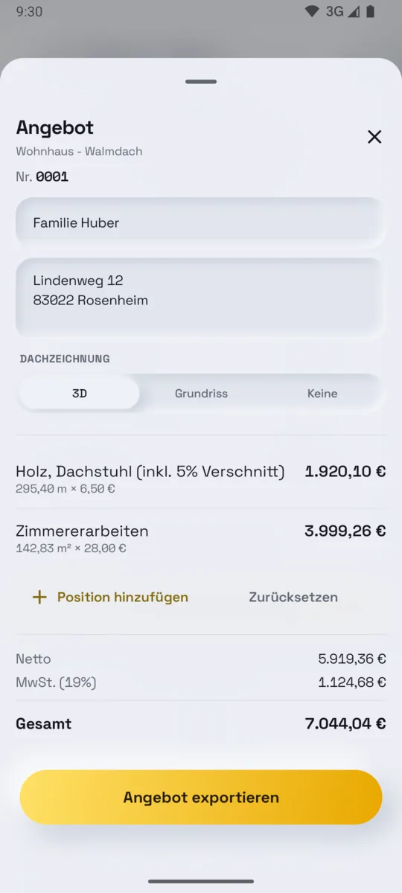
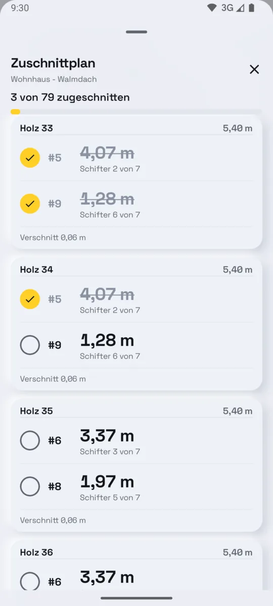
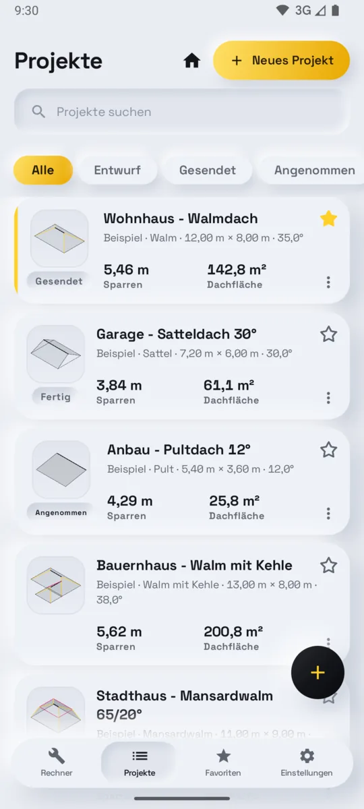

Dach anlegen
Sieben Dachformen, vom Pultdach bis zum Mansardwalm. Sparren in der Zeichnung antippen für Länge und Schnitte.
Dachstuhl-Rechner für Android
Dachwerk berechnet den Dachstuhl aus wenigen Maßen: jeden Sparren mit Länge und Schnitten, die Schnittliste für den Abbund und das Angebot für den Kunden. Direkt auf der Baustelle, auch ohne Empfang.
Vom Zollstock zur Säge
Dachform wählen, Gebäude eingeben. Dachwerk zeichnet das Dach maßstabsgetreu und rechnet jedes Teil neu, sobald sich ein Maß ändert.

Sieben Dachformen, vom Pultdach bis zum Mansardwalm. Sparren in der Zeichnung antippen für Länge und Schnitte.

Jedes Teil nummeriert, jeder Schifter mit eigener Länge, die Holzbestellung nach Querschnitt.

Dein Briefkopf, deine Preise und eine Zeichnung des Dachs, die der Kunde versteht.
Was berechnet wird
Sparren, Gratsparren, Kehlsparren, Schifter und Obersparren, dazu Neigung, Höhe, Grundmaß, Dachfläche und die Längen von Traufe, Ortgang, First, Grat und Kehle.
Firstschnitt, Auflagerschnitt, Backenschnitt und Kerventiefe, mit allen Maßen direkt in der Zeichnung.
Die Stücke werden auf die Längen verteilt, die dein Händler führt, mit Sägeschnitt und Verschnitt. Beim Zuschnitt hakst du Stück für Stück ab.

Holz, Verschnitt, Arbeitslohn und MwSt. auf deinem Briefkopf, direkt aus dem Dach. Eigene Positionen aus der Preisliste; die Rechnung übernimmt alles aus dem Angebot.

0 Balken
Im Dachboden, auf dem Gerüst, im Flugmodus. Nichts wartet auf einen Server.
0 Tracker
Kein Konto, keine Werbung, keine Analyse. Projekte und Kunden liegen nur auf deinem Handy.
27
Metrisch oder imperial. Neigung in Grad, Prozent oder als Verhältnis.
Mehr als eine Sparrentabelle
Preis
Kein Abo. Keine Testphase, die abläuft.
0 €
Ohne Grenze, auf jedem Dach.
Einmal
Den Preis zeigt Google Play in deiner Währung.
Ab dem vierten Dach gehen kostenlose Angebote und Rechnungen weiterhin raus – mit einer kurzen Zeile „Erstellt mit Dachwerk“ unten.
Fragen
Dachwerk ist ein Sparrenrechner bzw. Dachstuhl-Rechner für Android. Aus wenigen Maßen berechnet die App jeden Sparren mit Länge und Schnitten, zeichnet das Dach maßstabsgetreu, erstellt Schnittliste und Holzbestellung und schreibt Angebot und Rechnung für den Kunden. Gemacht für Zimmerer, Dachdecker, Holzbaubetriebe und Bauunternehmer.
Satteldach, Pultdach, Walmdach, Krüppelwalmdach, Walmdach mit Kehle (Winkeldach), Mansarddach und Mansardwalmdach.
Ja: Sparren, Gratsparren, Kehlsparren, Schifter und Obersparren. Jeder Schifter steht mit seiner eigenen Länge in der Liste, nicht als Bereich, mit Firstschnitt, Auflagerschnitt, Backenschnitt und Kerventiefe.
Ja. Rechner, Zeichnungen, Schnittlisten und PDFs funktionieren ohne Empfang. Internet braucht die App nur, um einen optionalen Kauf über Google Play abzuschließen.
Rechner, Zeichnungen, Schnittliste, Holzbestellung und dein Briefkopf sind kostenlos, ohne Grenze. Auf deinen ersten drei Dächern gehen auch Angebote so raus wie mit Pro. Ab dem vierten Dach steht unten auf Angeboten und Rechnungen eine kurze Zeile „Erstellt mit Dachwerk“, bis du Pro freischaltest.
Pro ist ein Einmalkauf. Kein Abo.
Ja. Holz, Verschnitt, Arbeitslohn und MwSt. direkt aus dem berechneten Dach, auf deinem Briefkopf mit Logo. Eigene Positionen kommen aus deiner Preisliste. Die Rechnung übernimmt Kunde und Positionen aus dem Angebot. Beides geht als PDF per E-Mail oder Messenger raus oder wird ausgedruckt.
Nein. Kein Konto, keine Werbung, keine Analyse, kein Tracking. Projekte, Kunden und Firmendaten bleiben auf deinem Handy. Zur Datenschutzerklärung.
Derzeit nicht. Dachwerk läuft auf Android-Handys und -Tablets ab Android 8.0.
Nein. Dachwerk rechnet Geometrie und hilft bei der Planung. Es ersetzt keine Statik. Prüfe die Ergebnisse anhand der geltenden Bauvorschriften, der statischen Vorgaben und der Herstellerangaben.
Kostenlos bei Google Play, für Android-Handys und -Tablets.
Dachwerk rechnet Geometrie und hilft bei der Planung. Es ersetzt keine Statik.